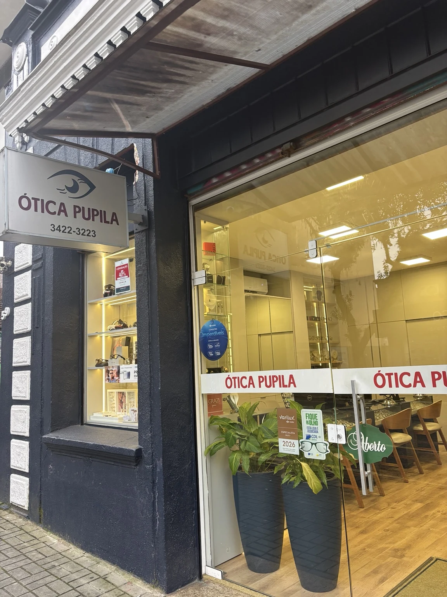
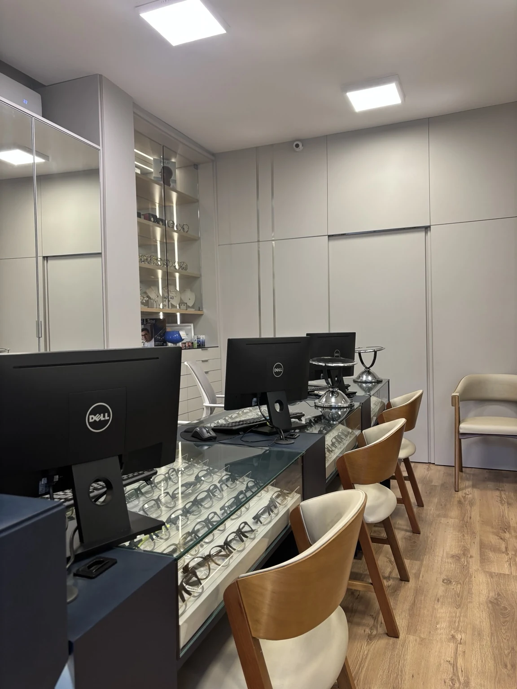
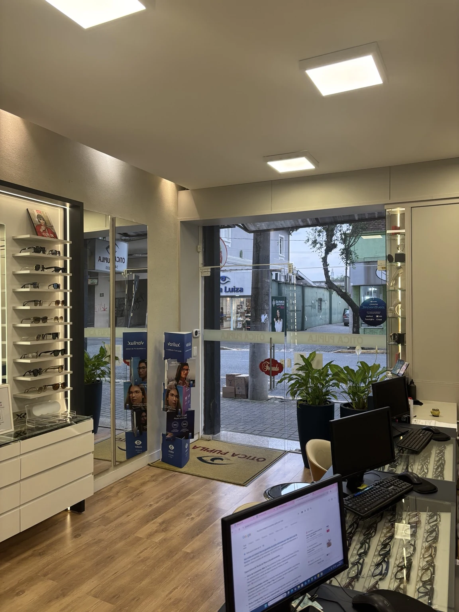
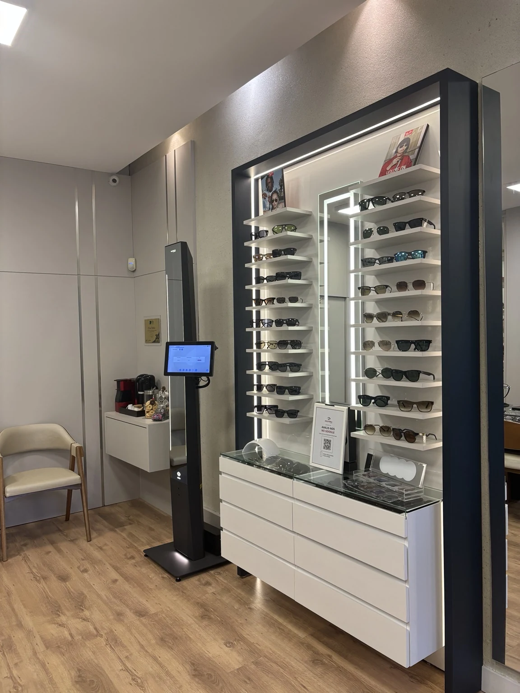

JOINVILLE · DESDE 1992
Uma história de confiança.
Conheça um pouco da nossa trajetória e do espaço onde recebemos você.

1992
O começo da nossa trajetória.
Fundada em 1992, a Ótica Pupila atua no segmento óptico em Joinville, Santa Catarina.
Ao longo dessa trajetória, seguimos valorizando a conversa com cada cliente, a orientação na escolha e a atenção aos detalhes.
Hoje, nossa loja está na Rua Abdon Batista, 59, no Centro de Joinville. Um espaço para conhecer os produtos, conversar e escolher com atenção.
NOSSA LOJA, HOJE
Um espaço para receber você.


